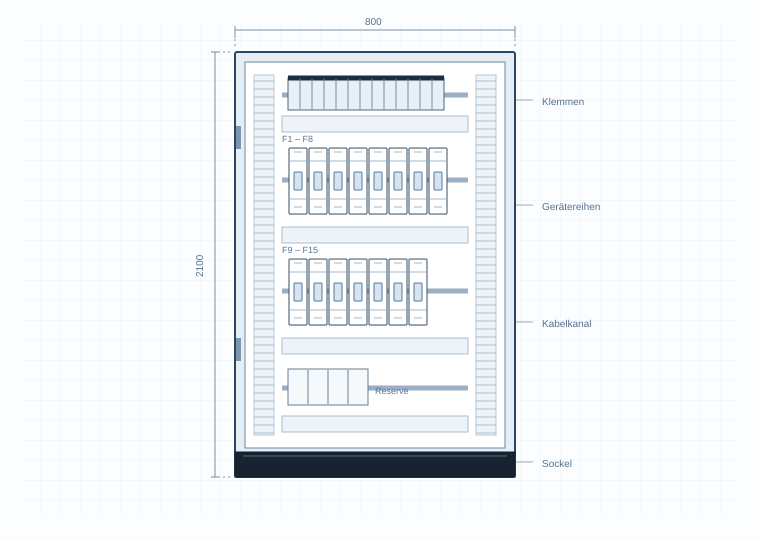

VON DER PLANUNG BIS IN DIE WERKSTATT
Deine Schaltanlage.
Alles an einem Ort.
Schemas zeichnen, Aufbauten planen, Offerten erstellen.
Deine Werkzeuge für den Schaltanlagenbau – direkt im Browser.

Disposition · Masse in mm · 1:10EIN ARBEITSPLATZ. DEINE WERKZEUGE.
Vom ersten Strich
bis zum fertigen Auftrag.
Wähle ein Beispiel und entdecke, was du mit den Werkzeugen bearbeiten kannst.
SCHEMA & DISPOSITION
Deine Planung
nimmt Form an.
Platziere Symbole und Makros, beschrifte Abgänge und vergleiche passende Aufbauvarianten. Vom Schema bis zur räumlichen Ansicht.
- Schemas zeichnen und verbinden
- Schrank- und Rahmenvarianten vergleichen
- Disposition in 2D und 3D ansehen
BEISPIEL · ANGEBOT
Unterverteilung
Anlage zusammenstellen & kalkulieren
OFFERTEN
Aus Bauteilen
wird ein Angebot.
Stelle Anlagen und Artikel zusammen, ergänze Montagezeiten und bereite die Offerte mit den Angaben deines Betriebs vor.
- Anlagen und Positionen strukturieren
- Material und Arbeit kalkulieren
- Mit deinem Firmenabsender exportieren
BEISPIEL · WÄRMEBERECHNUNG
Den Aufbau prüfen.
Erkannte Angaben prüfen und ergänzen.
WÄRMEBERECHNUNG
Planungsdaten
weiterverwenden.
Lies Unterlagen ein, kontrolliere die erkannten Geräte und ergänze deine Anlagendaten. Berechnungen und Nachweise bleiben beim Projekt.
- Schema und Disposition einlesen
- Geräte und Verlustleistungen prüfen
- Excel und Nachweise vorbereiten
DEINE WERKSTATTWERKZEUGE
PRODUKTION
Weniger suchen.
Weiterbauen.
Die Rechner, Tabellen und Unterlagen für deinen Arbeitsalltag sind direkt erreichbar. Im Büro und auf dem Tablet in der Werkstatt.
- Schienen und Zuschnitte berechnen
- Technische Referenzen nachschlagen
- Werkzeuge passend zur Aufgabe freigeben
DEIN BETRIEB. DEIN ARBEITSPLATZ.
Zusammen arbeiten.
Klar organisiert.
Jeder arbeitet mit seinem persönlichen Zugang. Deine Firma bestimmt, welche Werkzeuge zur Verfügung stehen – und tritt auf Dokumenten mit ihrem eigenen Absender auf.
- 01
Persönlicher Zugang
Mit Benutzername oder E-Mail anmelden und direkt im Dashboard starten.
- 02
Deine Firma sichtbar
Logo, Adresse und Kontaktangaben einmal hinterlegen und in den Werkzeugen verwenden.
- 03
Passende Berechtigungen
Firmenadministratoren geben ihren Mitarbeitern die benötigten Werkzeuge frei.
BEREIT FÜR DEIN NÄCHSTES PROJEKT?
Dein Arbeitsplatz wartet.
Jetzt anmeldenDeinen persönlichen Zugang erhältst du vom Plattformbetreiber.